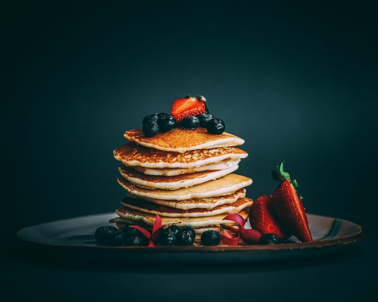
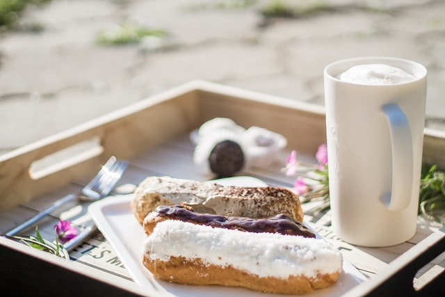
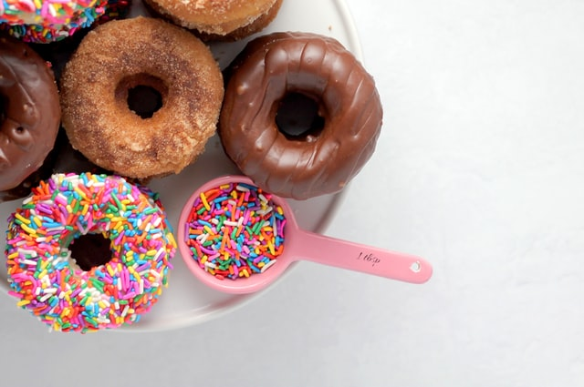
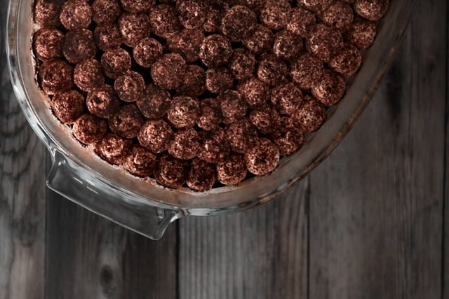

Clătite
Deserturile preparate in casa sunt printre cele mai delicioase gustari. Iar intre acestea, clatitele ocupa un loc special. Ne-au indulcit copilaria si de ele ne leaga poate unele dintre cele mai frumoase amintiri de familie.
Eclere
Cine nu iubeste eclerele? Acestea se afla in topul preferintelor romanilor si nu doar datorita gustului deosebit, ci si emotiilor pe care acestea le trezesc. Mai mult ca sigur, eclerul este una dintre prajiturile copilariei tale
Gogoși
Gogoși umplute cu gem sau cremă de vanilie, ciocolată – foarte pufoase. Cum se fac gogoșile de casă cu gem de caise, zmeură?
Tiramisu
Despre această prăjitură se spune că ar fi fost inventat pentru a folosi cafeaua rece și biscuiți țări rămași în restaurante, adăugând peste ei o crema pe baza de mascarpone, gălbenușuri și zahăr.Este extrem de delicioasă